Killua additional correctionsrun v07 — ok
Head size corrected. Existing near/far leg depth reversal still ambiguous; preserved approved body/poses, not claimed as new gait repair. Extra calls 2/3.
First cell: approved idle. Remaining cells: f0–f7 at one pixel scale.
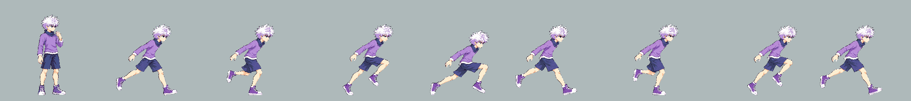
Source strip
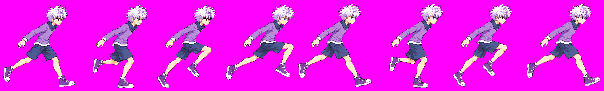
light1 v08 — drift
Capped: final hair-only retry overshot; f0-f3 still oversized. Earlier v06/v07 also failed. No further calls authorized in this round. Extra calls 3/3.
First cell: approved idle. Remaining cells: f0–f6 at one pixel scale.
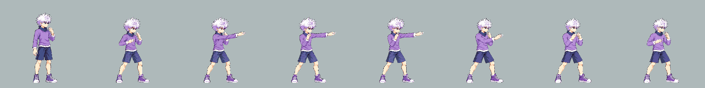
Source strip
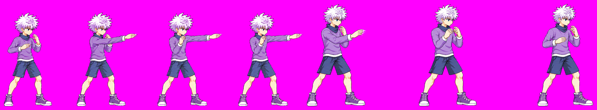
heavy v10 — ok
Hair f0/f5 reduced; crouched skull measurement remains ±12 source px. Full 8-frame body continuity inspected. Extra calls 2/3.
First cell: approved idle. Remaining cells: f0–f7 at one pixel scale.
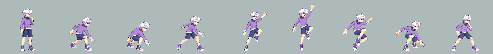
Source strip
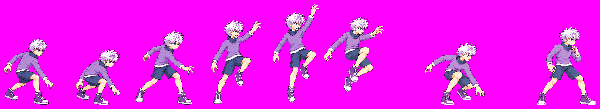
airLight3 v07 — pop
Capped: final A hair retry overshot, f2/f3 large. B is corrected v06 unchanged. Earlier v06 A was undersized. Do not scalar-fit away the part discrepancy. Extra calls 3/3.
First cell: approved idle. Remaining cells: f0–f5 at one pixel scale.
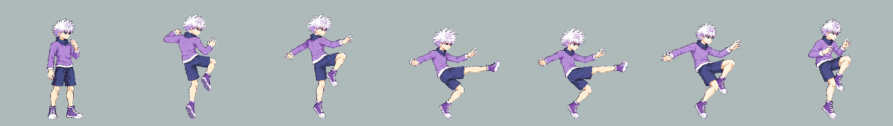
Source strip
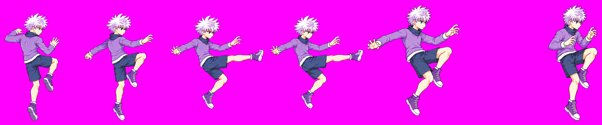
airHeavy v06 — ok
Second call corrected remaining f2 hair; all 6 frames read continuous at one scale. Extra calls 2/3.
First cell: approved idle. Remaining cells: f0–f5 at one pixel scale.
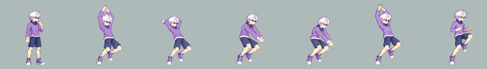
Source strip
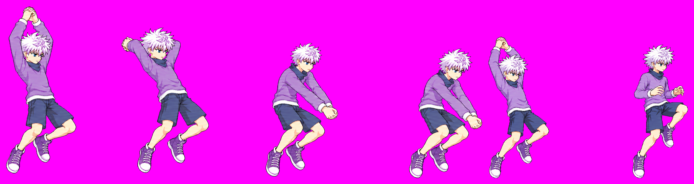
special v05 — ok
Head correction in B, original A unchanged. All eight hand poses and body lengths preserved. Extra calls 1/3.
First cell: approved idle. Remaining cells: f0–f7 at one pixel scale.
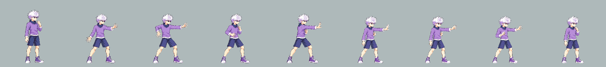
Source strip
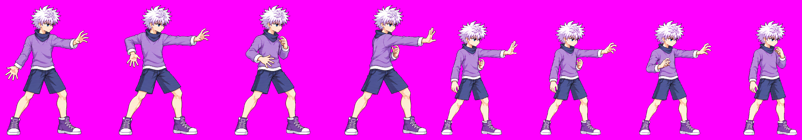
specialDown v04 — ok
Hair-only correction f0/f1. All four body poses preserved. Extra calls 1/3.
First cell: approved idle. Remaining cells: f0–f3 at one pixel scale.
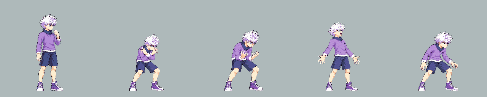
Source strip
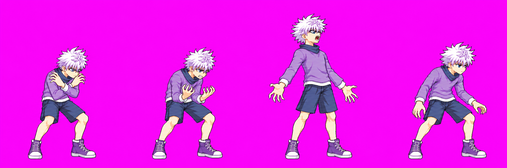
down v05 — unmeasured
Claude manual QA required for new v05. Side-on f0 impact/f1 rest; shortened near shin ~1.30 skull axes; source landmarks uncertain ±18px. No new floor/margin warning. Extra calls 1/3.
First cell: approved idle. Remaining cells: f0–f1 at one pixel scale.
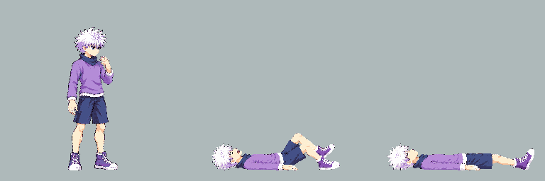
Source strip
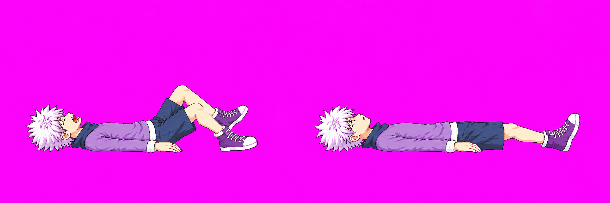
ko v06 — unmeasured
Claude manual QA required for new v06. Side-on rest; shortened shin ~1.49 skull axes vs prior ~2.3; source landmarks uncertain ±20px. No new floor/margin warning. Extra calls 1/3.
First cell: approved idle. Remaining cells: f0–f0 at one pixel scale.
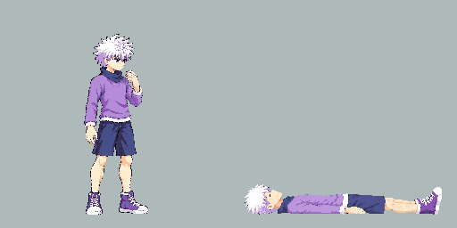
Source strip
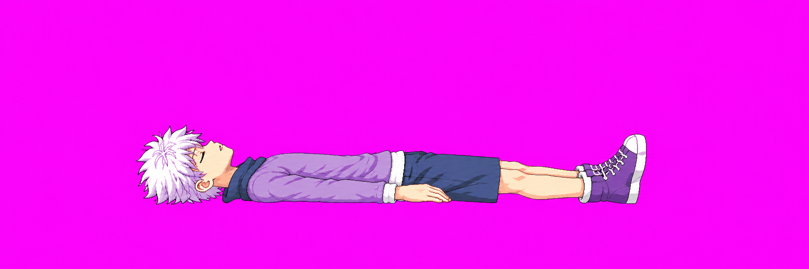